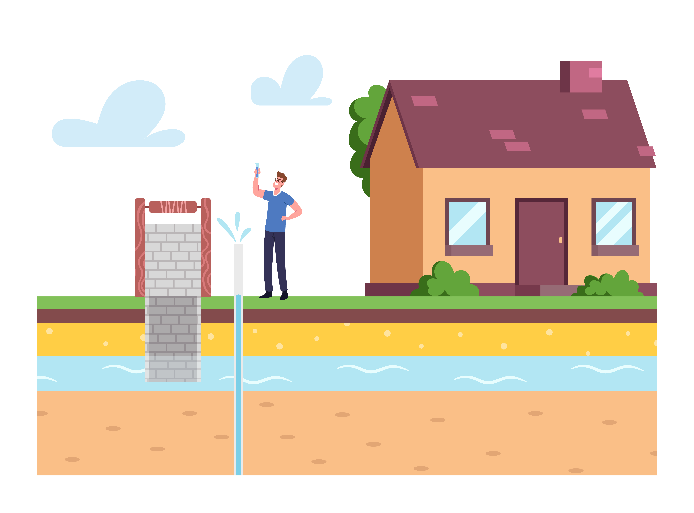
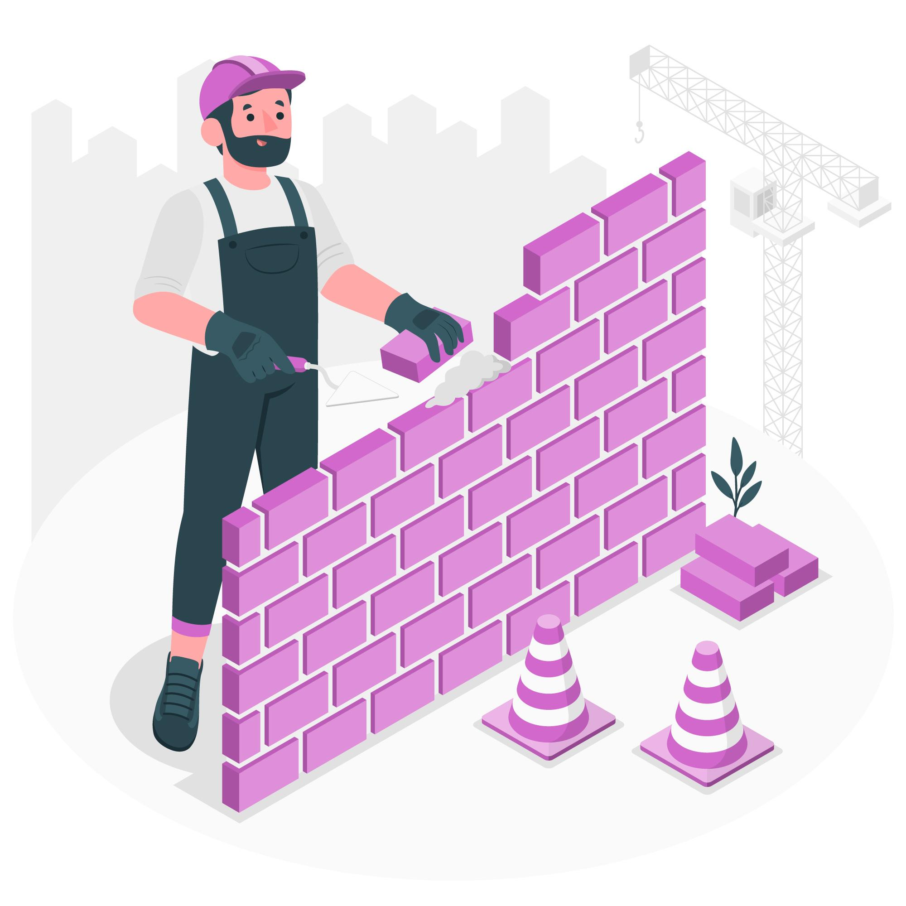

Assainissement

Nos services d'assainissement couvrent un large éventail de besoins
Installation de systèmes d'assainissement
Nous pouvons concevoir et installer des systèmes d'assainissement adaptés à votre maison, en utilisant des technologies de pointe pour garantir une performance optimale et une conformité aux normes en vigueur.
Rénovation et réparation
Si vous rencontrez des problèmes d'assainissement tels que des fuites, des obstructions ou des dysfonctionnements, notre équipe qualifiée peut diagnostiquer et résoudre ces problèmes de manière rapide et efficace.
Entretien régulier
Pour prévenir les problèmes d'assainissement à l'avenir, nous proposons des services d'entretien régulier, y compris la vidange des fosses septiques, le nettoyage des canalisations et l'inspection des systèmes d'égouts.
Conseils d'experts
Notre équipe d'experts est là pour vous guider et vous conseiller sur les meilleures pratiques en matière d'assainissement, en vous aidant à prendre des décisions éclairées pour votre maison.
Maçonnerie
Aménagement paysager

Pavé
Nous sommes spécialisés dans la pose de pavés de jardin de haute qualité, qui ajoutent une touche esthétique et fonctionnelle à vos allées, vos terrasses et vos espaces de circulation extérieurs. Nous offrons une variété de designs, de couleurs et de motifs pour créer des surfaces uniques et attrayantes.
Bordure
Nous concevons et installons des bordures de jardin qui ajoutent une touche d'élégance et de finition à vos parterres de fleurs, vos massifs et vos allées. Que vous préfériez des bordures en béton, en pierre naturelle ou en matériaux composites, notre équipe expérimentée garantit une pose précise et durable.
Dalle béton
Les dalles en béton sont polyvalentes et durables, offrant une solution solide pour les terrasses, les patios et les zones de détente en plein air. Notre équipe de professionnels expérimentés assure une pose précise et une finition soignée pour créer des espaces extérieurs à la fois esthétiques et résistants.
rénovations et réparations
Si vous avez des petites maçonneries existantes endommagées ou qui nécessitent des réparations, notre équipe peut intervenir pour les remettre en état et leur redonner leur beauté et leur fonctionnalité d'origine.